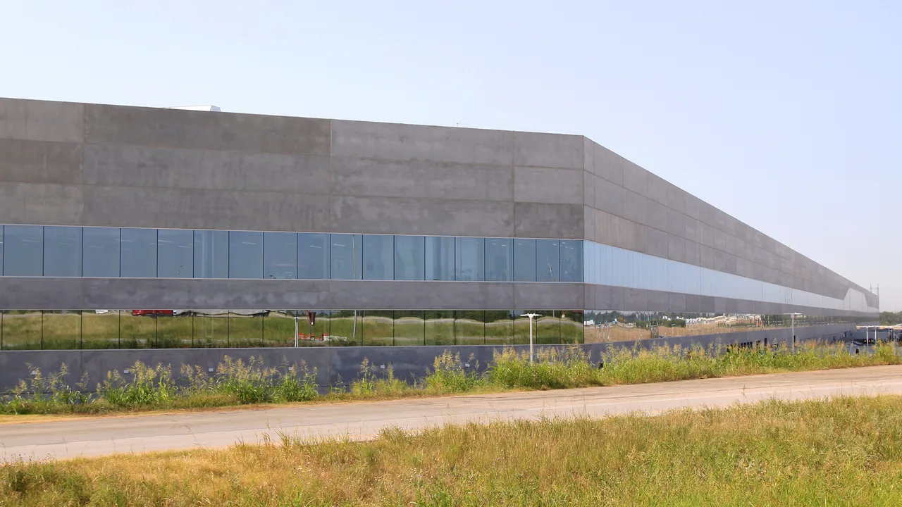
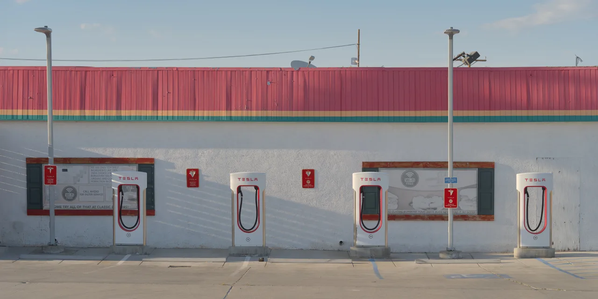
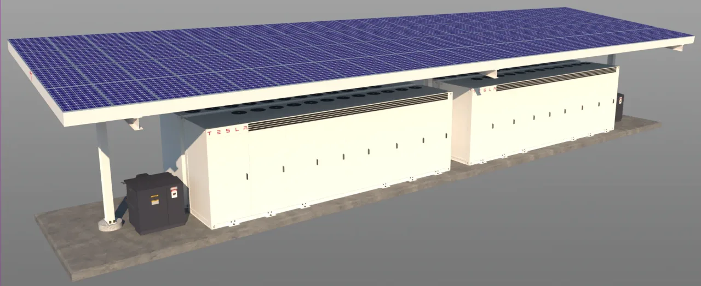

▲ 테슬라 기가팩토리 텍사스 — 신설되는 '테라팹'은 이 기가팩토리와는 별도로, 텍사스 그라임스 카운티에 새로 건설되는 반도체 전용 시설이다
테슬라와 스페이스X가 텍사스에 대형 반도체 공장 '테라팹(Terafab)'을 짓기로 확정했습니다. 초기 투자금만 약 168억 달러(약 23조원)로, 지난 3월 발표됐던 250억 달러 규모 계획의 일부가 먼저 구체화된 것입니다. 부지 면적은 929만㎡ 이상, 미국 단위로는 약 1억 제곱피트에 달합니다. TSMC의 대형 시설과 비교해도 10배가 넘는 규모입니다. 반도체 전문 기업이 아닌 자동차·우주 기업이 이 정도 규모의 칩 공장을 직접 짓는다는 점에서, 업계의 시선이 쏠리고 있습니다.
1. TSMC보다 10배 큰 부지, 왜 이렇게 크게 짓나
929만㎡라는 숫자는 감이 잘 오지 않지만, 축구장으로 환산하면 약 1,300개, 흔히 비교 기준으로 쓰이는 규모로 치면 130배가 넘는 크기입니다. TSMC의 대형 파운드리 시설과 비교해도 10배 이상입니다. 이렇게 큰 부지가 필요한 이유는 반도체 설계뿐 아니라 팹(fab, 생산라인) 전체를 자체적으로 구축하려는 목표 때문으로 풀이됩니다. 설계는 자체적으로 하되 생산은 외부 파운드리에 맡기는 일반적인 팹리스 모델과 달리, 테슬라·스페이스X는 생산 단계까지 통째로 내재화하려는 것으로 보입니다.
2. 연간 1테라와트, 어느 정도 규모인가
테라팹이 목표로 하는 연간 컴퓨팅 능력은 1테라와트(TW) 이상입니다. 테라와트는 기가와트(GW)의 1,000배에 해당하는 단위로, AI 반도체 업계에서 일반적으로 쓰이는 기가와트급 생산능력과 비교하면 자릿수 자체가 다릅니다. 이 정도 생산능력을 자동차·우주 기업이 직접 확보하겠다는 것은, AI 연산 수요가 앞으로 자율주행·로봇·우주 인프라 전 영역에서 기하급수적으로 늘어날 것이라는 판단이 깔려 있다는 뜻입니다.
| 항목 | 수치 |
|---|---|
| 초기 투자금 | 약 168억 달러(23조원) |
| 부지 면적 | 929만㎡ 이상 |
| TSMC 대비 규모 | 10배 이상 |
| 목표 컴퓨팅 능력 | 연간 1TW 이상 |
| 고용 규모 | 최소 3,000명 |
| 위치 | 텍사스 그라임스 카운티 |

▲ 테슬라 슈퍼차저 충전소 — 테슬라는 자동차용 배터리·충전 인프라에 이어 이제 반도체 생산까지 자체 공급망 안으로 끌어들이고 있다
3. 옵티머스·사이버캡, 결국 로봇과 자율주행이 이유
테라팹에서 생산될 반도체의 주요 용도로 꼽히는 것은 휴머노이드 로봇 옵티머스, 자율주행 전용 차량 사이버캡, 그리고 우주 기반 데이터센터입니다. 세 가지 모두 대량의 실시간 AI 연산을 요구하는 분야입니다. 특히 옵티머스와 사이버캡은 아직 본격 양산 단계에 이르지 못한 제품인데도, 이 시점에 대규모 반도체 공장부터 확보하려는 것은 향후 수요 폭증에 대비한 선제적 투자로 해석됩니다. 외부 파운드리에 의존할 경우 물량 확보 경쟁에서 밀릴 수 있다는 우려도 이런 결정에 영향을 미쳤을 가능성이 있습니다.

▲ 테슬라 메가팩 — 에너지저장장치에 이어 반도체까지, 테슬라의 에너지·컴퓨팅 자체 생산 범위가 계속 넓어지고 있다
4. 자동차 회사가 반도체를 직접 만드는 이유
최근 몇 년간 완성차·빅테크 기업들이 반도체 공급망 자체 확보에 나서는 흐름은 계속 강해지고 있습니다. 코로나19 이후 벌어진 차량용 반도체 부족 사태가 자동차 업계 전반에 큰 교훈을 남겼고, AI 연산 수요가 급증하면서 엔비디아 등 소수 기업에 의존하는 구조 자체가 리스크로 인식되고 있기 때문입니다. 테슬라·스페이스X처럼 자율주행·로봇·우주라는 세 영역을 동시에 밀어붙이는 기업일수록, 외부 공급망에 의존하지 않고 반도체를 자체 생산하려는 유인이 더 클 수밖에 없습니다.
5. 남은 변수들
다만 이 정도 규모의 반도체 공장을 실제로 가동하기까지는 넘어야 할 산이 많습니다. 반도체 생산은 자동차 제조와는 완전히 다른 정밀 공정과 인력, 장비 공급망을 요구합니다. 초기 투자금 168억 달러도 최종적으로는 250억 달러 이상으로 늘어날 가능성이 있고, 실제 가동 시점과 목표 생산능력 달성 여부도 불확실합니다. 그럼에도 이번 결정은 자동차 산업의 경계가 반도체·로봇·우주 산업과 빠르게 겹쳐지고 있다는 것을 보여주는 상징적인 사례로 남을 전망입니다.